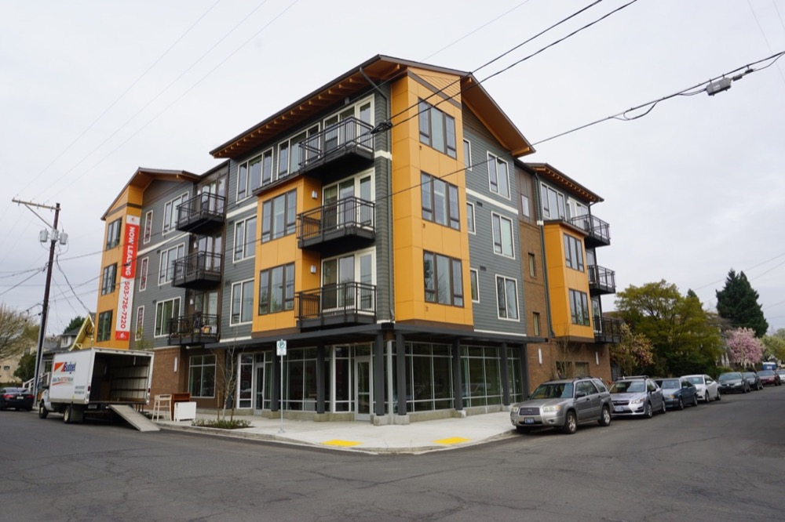
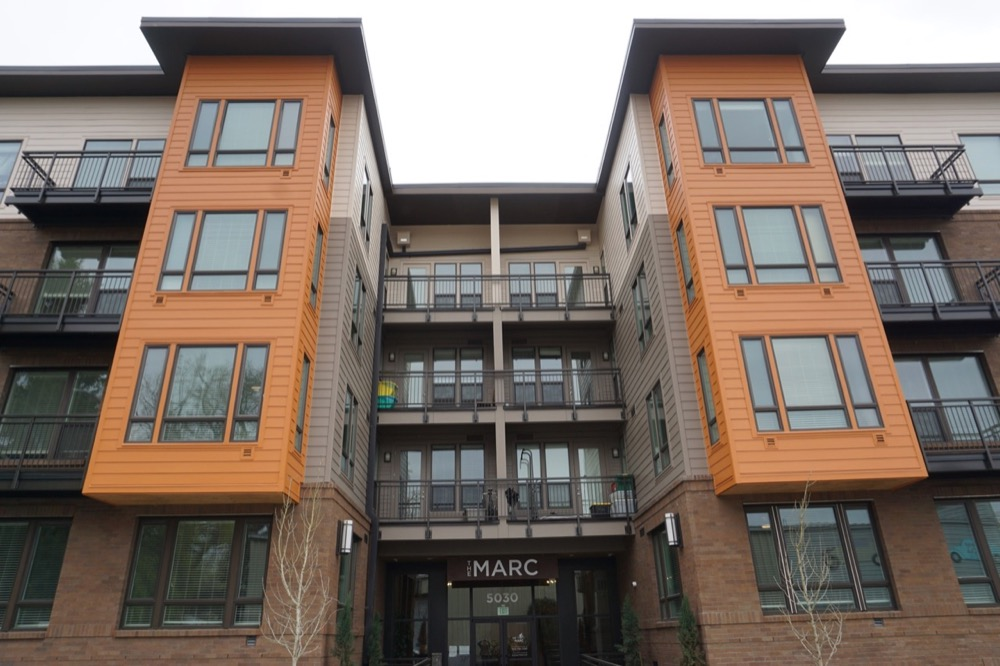

5205 SE 86th Ave.

3701 SE Caruthers St.

4975 SE Division St.

5030 SE Stephans St.

2929 SE Stark St.

2626 SE Ankeny St.

50 SE 13th Ave.

4018 N Mississippi Ave.
KO Contracting is family owned and operated with over 15 years of experience in the market. We are licensed and insured general contractors, siding contractors, waterproofing contractors, and window installers in the state of Oregon and SW Washington.
One of our quality signatures is our work on exteriors. We use high quality materials like Fortifiber and Tyvek building warp products, and James Hardi and Cemplank fiber cement siding and Soffit; all products are installed per manufacturer recommendations and inspected by a product representative to ensure quality and validate the product warranty. Our personnel is trained to ensure the quality of our work.
Proper installation and function of windows provide excellent protection from the elements and an extended lifetime of the the window itself. proper protection from the weather, avoiding water intrusion. On our remodeling projects, we have found signs of poor quality installation products that can lead to water intrusion causing dry rot damage on the building structure, our company's quality standards help avoiding this problems. We also keep track of the entire installation process with photography during the process of the installation. All photos are kept in an archive created for each job so we can use them for future references and inspections.
We use high quality asphalt felt products and ensure quality of the roof installation. The roof is the most important protection from the elements on a house, so we ensure proper installation of the roof for a long lifetime of the structure.
Our personnel are also trained to meet the safety requirements by the Oregon OSHA, they are often sent to lasses about fall protection, and proper use of the equipment and machinery. We put the safety of our personnel and others first, to ensure that no safety hazards are created on the job site. We are also extremely careful on remodeling projects; we take caution to avoid hazards for the people living in the area. Our standards are keeping the job site as clean as possible, the area surrounded by proper protection and personnel in charge of the protection of the job area.
Phone: 208.283.7074 (Business Hours: M-Sa 8-6pm PST)
For more information on our services.